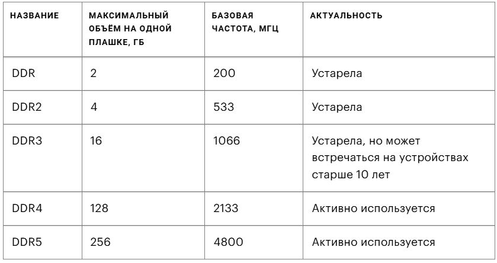

Оперативная память, или оперативное запоминающее устройство (ОЗУ), — это тип памяти, в котором во время работы компьютера хранится выполняемый машинный код и данные, которые в этот момент обрабатывает процессор.
ОЗУ отличается от устройств постоянной памяти, например жёстких дисков или твердотельных накопителей, большей скоростью работы. Так, современный SSD M.2 NVMe с портом PCI-E 5.0 передаёт данные на скорости до 15 ГБ/с, а оперативная память стандарта DDR5, работающая на минимальной для такого типа ОЗУ частоте в 4800 МГц, выжимает уже 56 ГБ/с. Разница — в 3,7 раза!
Поэтому процессор для обработки информации обращается за необходимыми данными именно к ОЗУ, а не к постоянной памяти. Если бы он общался напрямую с SSD или HDD, то привычные вычисления, которые обычно занимают мгновения, выполнялись бы в несколько раз дольше.
Структура оперативной памяти похожа на таблицу, где сперва выбирается строчка, а после — столбец:
Тип памяти
Тип памяти в современных ОЗУ — DDR (double data rate, «удвоенная скорость передачи»). Этот стандарт появился в 2000 году и используется до сих пор.
DDR насчитывает пять поколений, определить которые можно по цифре в названии типа памяти.Модули одного поколения физически несовместимы с разъёмами других поколений. Вставить планку DDR3 в слот для DDR4 невозможно. Поколения отличаются друг от друга максимальным объёмом памяти на одной плашке и базовой частотой:
Тактовая частота
Тактовая частота определяет, сколько операций в секунду может выполнить ОЗУ, — чем она выше, тем выше пропускная способность памяти.
Тактовая частота зависит от поколения оперативной памяти. Например, для DDR4 этот показатель равен 2133 МГц. Некоторые умельцы пытаются увеличить рабочую частоту с помощью её разгона, по аналогии с разгоном процессоров. Например, DDR4 можно разогнать до 3200 МГц, повысив тактовую частоту почти на 30%. Но стоит помнить, что самостоятельный разгон часто заканчивается выходом ОЗУ из строя.
Тайминги
Тайминги — показатель задержки ОЗУ между отправкой команды и её фактическим исполнением, измеряемый в тактах. Чтобы разобраться в том, что это такое, придётся погрузиться в устройство оперативной памяти на физическом уровне.
Данные в ОЗУ хранятся в виде таблицы со строками и столбцами. В месте их пересечения образуется ячейка, которая содержит заряд — это физическая форма бита. Получив команду чтения или записи данных, микросхема оперативной памяти начинает перебирать строки таблицы в поиске нужной. Делает она это тактами, или «шагами». Количество этих шагов до попадания в нужную строку и столбец таблицы и формирует тайминг, то есть задержку между отправкой команды с микросхемы оперативной памяти до её исполнения.
Например, на ОЗУ может быть написано 14-16-16-35 или просто CL14. И то и другое — «четырнадцатый тайминг».
Числа 14-16-16-35 по порядку означают: